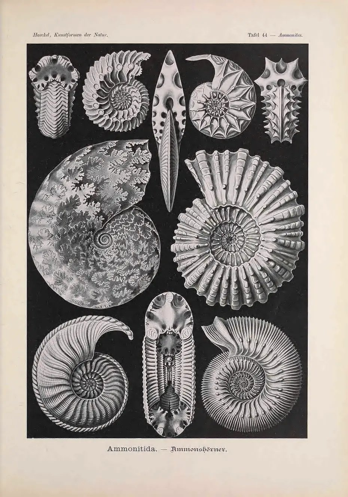

Ammonitida (Kunstformen der Natur, plate 44)
Ernst Haeckel & Adolf Giltsch · 1899–1904 · Book plate (printing method not confirmed) · Smithsonian Libraries and Archives
Free to use
The shells on this plate are fossils, taken from rocks of the Alpine Triassic, the middle Jurassic and the Cretaceous; the animals that made them died out completely toward the end of the Cretaceous. For figure 5 the outer wall of the shell was ground away to show the branching lines where the inner walls meet it.